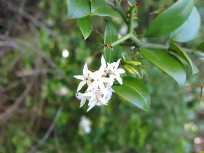

pranet · 出典付きの植物図鑑
كاريس ثنائي الشوك
Carissa bispinosa Desf. · Apocynaceae

Carissa bispinosa grows as a shrub or small tree up to 5 metres (16 ft) tall. Its fragrant flowers feature a white corolla. The fruit is red when ripe. Its habitat is woodland and forest from 1,080 m (3,540 ft) to 1,630 m (5,350 ft) elevation. Vernacular names for the plant include forest num-num and Y-thorned carissa. Carissa bispinosa is native to an area from Uganda to South Africa.
出典: Wikipedia (en): Carissa bispinosa · CC BY-SA 4.0
異名: Arduina acuminata E.Mey., Arduina bispinosa L., Arduina erythrocarpa Eckl., Arduina megaphylla Gand., Carandas arduina S.Moore, Carissa acuminata (E.Mey.) A.DC., Carissa arduina Lam., Carissa cordata (Mill.) Fourc., Carissa cordata Dinter, Carissa dinteri Markgr., Carissa erythrocarpa A.DC., Carissa myrtoides Desf., Carissa sessiliflora Brongn. ex Pichon, Carissa wyliei N.E.Br., Jasminonerium acuminatum (E.Mey.) Kuntze, Jasminonerium bispinosum (L.) Kuntze, Jasminonerium erythrocarpum Kuntze
同定や利用は自己責任でお願いします。この図鑑だけを根拠に野生の植物を食べないでください。
出典
- 学名: World Flora Online Plant List 2026-06 · CC0 1.0
- 名前: Wikipedia の記事名と Wikidata · CC0 1.0（Wikidata）。記事名は事実
- 説明: Wikipedia (en): Carissa bispinosa · CC BY-SA 4.0
- 食用・毒性: World Checklist of Useful Plant Species (Diazgranados et al. 2020, RBG Kew) · CC BY 4.0
- 分布: World Checklist of Vascular Plants (WCVP), RBG Kew, version 2026-06-04 · CC BY 3.0
このページは pranet のデータから自動生成しています。コードは MIT、データは項目ごとのライセンス（説明）。